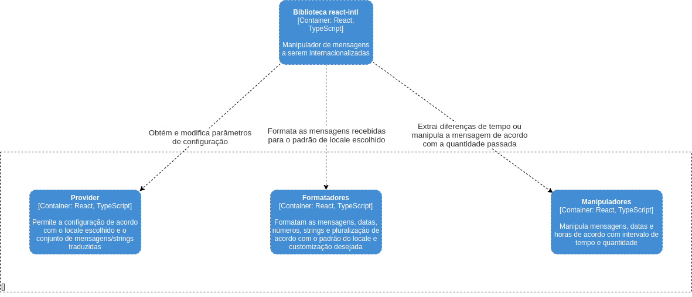

React Intl
Autores
Este documento foi produzido por Rayla Medeiros Araújo.
- Matrícula: 117110383
- Contato: rayla.araujo@ccc.ufcg.edu.br
- Projeto documentado: https://github.com/formatjs/formatjs/tree/main/packages/react-intl
Descrição Arquitetural – React Intl
Descrição Geral sobre o React Intl
O React Intl é uma das várias bibliotecas oferecidas pelo FormatJS, coleção de bibliotecas JavaScript, que segue os padrões do JavaScript Intl e do i18n, para internacionalização de números, datas e strings. Sendo essa biblioteca específica utilizada na internacionalização e formatação de aplicações React.
Objetivo Geral
Auxiliar na internacionação de projetos React, a partir da criação de objetos simples de serem trabalhados.
Objetivos Específicos
A biblioteca tem como objetivo trazer a internacionalização de strings, datas, números e pluralização para aplicações React, com uma API simples que pode ser utilizada tanto em componentes JSX quanto no código Javascript.
Contexto
Como dito antes, o react-intl é uma biblioteca oferecida pelo FormatJs, que manipula strings, datas, listas, números e pluralizações, tendo em vista a simplificação da internacionalização de aplicações React.
O desenvolvedor da aplicação passa as strings internacionalizadas de cada locale que ele deseja utilizar e o react-intl faz a formatação das mensagens a partir do locale selecionado.

Containers
O react-intl pode ser divida em dois containers principais: o I18n, responsavél pela configuração do idioma e paramêtros necessários para usar a biblioteca; e o Formatador de Dados, que formata e manipula as mensagens a partir das configurações feitas no I18n e customizações que o usuário pode passar.

Componentes
O diagrama abaixo contém os principais componentes do sistema:
-
Provider: Permite que o usuário configure o idioma da aplicação feita e as mensagens correspondentes a cada idioma.
-
Formatadores: Formata as mensagens recebidas de acordo com o idioma e customizações que o usuário deseje fazer.
-
Manipuladores: Manipula datas, horas e pluralização de acordo com o configurações específicas para esses casos, e no caso das datas e horas também há uma manipulações com intervalos de tempo.

Código
Nesta etapa não faremos diagramas que apresentam detalhes da implementação. Faremos isso mais adiante.
Visão de Informação
Ao configurar as mensagens de internacionalização e o locale, a aplicação está pronta para formatar ou manipular as mensagens recebidas. O usuário escolhe a mensagem que deseja manipular e então o react-intl, a partir das configurações feitas, retorna ao usuário sua mensagem formatada.